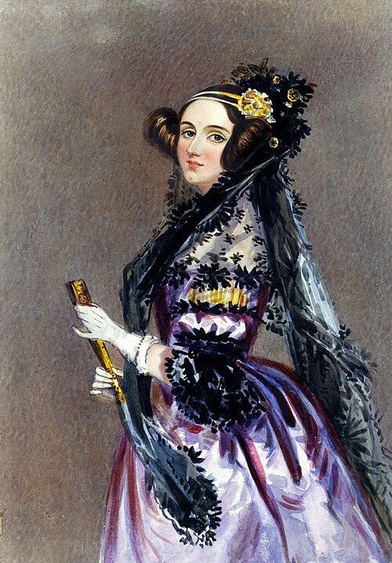

The first published algorithm
Note G walked through, operation by operation, how the Analytical Engine could compute Bernoulli numbers. It reads much like a program does today: variables, steps and repetition.
1815 – 1852
The mathematician who saw the future of computing a century before it arrived.

Augusta Ada Byron was born in London on 10 December 1815, the only legitimate child of the poet Lord Byron and Anne Isabella Milbanke. Her parents separated when she was a few weeks old, and she never got to know her famous father, who left England soon afterwards and died in Greece when she was eight. Her mother, worried that Ada might inherit Byron's restless, poetic temperament, made sure she was taught mathematics and logic from an early age, which was an unusual education for a girl in the early nineteenth century.
Ada was a curious and inventive child. At twelve she set out to design a flying machine, studying how birds were built and planning her wings with careful, methodical notes. In 1833, at seventeen, she met the mathematician Charles Babbage and was captivated by a working section of his Difference Engine, a mechanical calculator. That meeting began a friendship and correspondence that lasted the rest of her life. Babbage was so impressed by her mind that he called her the “Enchantress of Number”.
In 1842 Ada translated an article about Babbage's newer and far more ambitious design, the Analytical Engine, written in French by the Italian engineer Luigi Menabrea. She added her own explanatory notes, labelled A to G, which ended up about three times longer than the article itself. Published in 1843, Note G set out a step-by-step method for the engine to calculate Bernoulli numbers. It is widely regarded as the first algorithm written to be carried out by a machine, which is why Ada is often called the first computer programmer.
What truly set Ada apart was her imagination. Where others saw a powerful calculator, she saw a machine that could work with any kind of symbol, such as letters, musical notes or patterns, as long as their rules could be written down. She called her way of thinking “poetical science”, a blend of creativity and rigour. Ada died of cancer on 27 November 1852, aged just thirty-six. A century later her notes were rediscovered, and her ideas about general-purpose computing now read like a description of the modern world.
“The Analytical Engine weaves algebraical patterns just as the Jacquard-loom weaves flowers and leaves.”
Augusta Ada Byron is born on 10 December, daughter of Lord Byron.
At twelve, she studies bird anatomy to work out how a flying machine could be built.
She sees his Difference Engine and begins a lifelong exchange of ideas with him.
He is made Earl of Lovelace in 1838, and Ada becomes the Countess of Lovelace.
Her translation of Menabrea's paper appears with Notes A–G, including the Bernoulli numbers algorithm.
She dies on 27 November and is buried beside her father in Hucknall, Nottinghamshire.
B. V. Bowden republishes her notes in Faster Than Thought, reviving interest in her ideas.
The US Department of Defense names its new programming language “Ada” in her honour.
Note G walked through, operation by operation, how the Analytical Engine could compute Bernoulli numbers. It reads much like a program does today: variables, steps and repetition.
She predicted that such an engine “might compose elaborate and scientific pieces of music of any degree of complexity or extent”, an early glimpse of computers working with any kind of information.
Alan Turing answered “Lady Lovelace's Objection” in his famous 1950 paper on machine intelligence, and Ada Lovelace Day celebrates women in science and technology every October.